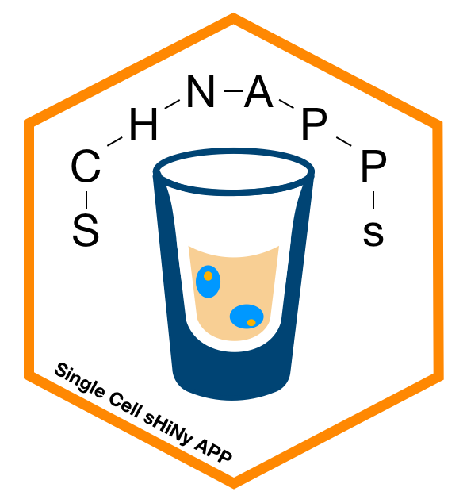

Overview
Shiny app for the exploration and analysis of single cell RNAseq data as it comes from 10X or MARSseq technologies. It is currently being developed based on user requests of the Cytometry and Biomarkers UTechS at the Institut Pasteur, Paris. The goal is to enable the users of our platform to explore their data, select cells they would like to work with and then perform the final analysis together with the bioinformatics support at Institut Pasteur.
Citation
Journal of Immunological Methods doi: 10.1016/j.jim.2021.113176
Installation
Developper tools need to be installed please see for further information:
Windows: https://cran.r-project.org/bin/windows/
MAC: https://cran.r-project.org/bin/macosx/
update.packages()
if (!require("devtools"))
install.packages("devtools")
# devtools::install_github("mul118/shinyMCE")
if (!requireNamespace("BiocManager", quietly = TRUE))
install.packages("BiocManager")
# update bioconductor packages if required
BiocManager::install()
# BiocManager::install("BiocSingular")
BiocManager::install("InteractiveComplexHeatmap")
BiocManager::install("SingleR") # needed to prepare data.
devtools::install_github("haowulab/Wind")
devtools::install_github("nghiavtr/BPSC")
BiocManager::install("DEsingle")
BiocManager::install("DESeq2")
BiocManager::install("edgeR")
BiocManager::install("MAST")
BiocManager::install("monocle")
BiocManager::install("monocle3")
BiocManager::install("scDD")
BiocManager::install("limma")
BiocManager::install("Seurat")
devtools::install_github("statOmics/zingeR")
BiocManager::install("scater")
install.packages("aggregation")
devtools::install_github("Zhangxf-ccnu/scDEA")
BiocManager::install("InteractiveComplexHeatmap")
install.packages("bookdown")
BiocManager::install ("GSVA")
BiocManager::install("GSEABase")
devtools::install_github("BaderLab/Tempora")
devtools::install_github("C3BI-pasteur-fr/UTechSCB-SCHNAPPs", dependencies = TRUE)create sample data set
Load a small set of 200 PBMC cells and save to a file in the local directory. This file can be uploaded using the app.
A SingleCellExperiment object is needed with the following
colData: sampleNames
rowData: Description
history functionality
To take advantage of the history functionality orca needs to be installed: (https://github.com/plotly/orca#installation)
orca is part of ploty so nothing to be done for R. But the pdftools are required:
Notes:
- once history check box is checked only the following plots will be recorded, the current plot will not be saved.
- any selection in the plot will not be visible. It is not a screen-shot.
- The date of recording is added to the title.
- Creating of the history will take some time.
- once activated, any changes of parameters will trigger re-plot and also a save to the history. This “feature” can also be used to create of the current plot by adding a “,” in one of the fields.
Running schnapps
To start the app:
history functionality
Plots can be automatically stored in a PDF file as they are created. This allows to somehow track what is being done. To enable this, the parameter historyFile has to be set to a file (probably non-existing, otherwise it will be appended to).
generate data files
A singleCellExperiment object is required, saved in a file RData object using
Please see GitHub for further documentation on how to use schnapps.
Please see GitHub Contributions for additional tools, not directly part of the SCHNAPPs pacakage.
Extending SCHAPPs
See SCHNAPPsContribution for examples and dummy contributions on how add functionality.
Credits
The original version of this app is based on CellView (https://github.com/mohanbolisetty/CellView), but it was substantially modified. It helped me get started.
We are also greatful to all the members of the single cell working group at Pasteur Paris.